Fourier Approaches
to Token Embedding
The Kronecker embedding codec removes vocabulary size from the parameter count by addressing every token as a sum of Kronecker products between a one-hot byte-value vector and a one-hot byte-position vector. That position vector is, in the language of kernel methods, a delta-function kernel — the most degenerate kernel possible. This page derives what happens when it's replaced with a smooth, tunable-bandwidth Fourier kernel instead, then trains four real transformers to find out whether the theory holds.
Overview
Two written artifacts sit behind this page: a theoretical note deriving what a Fourier substitution buys and costs, and an empirical report that trains four real transformers to check every claim it could. A combined paper merges both into one canonical document.
Abstract, condensed
The Kronecker codec inherits two structural costs from using one-hot, discrete
bases: a hard truncation wall at a fixed byte budget (pos_dim), and a
codec output dimension rigidly coupled to that budget
(D = char_dim · pos_dim), which forecloses weight tying. Part I asks:
does replacing the discrete position basis with a Fourier basis fix these
costs, and at what price? It derives the codec's similarity structure in
closed form and shows the one-hot construction is the
degenerate, zero-bandwidth limit of a more general spectral
construction. Part II trains four ~105–111M-parameter transformers — Dense,
Kronecker, Fourier, and a narrow-band Fourier ablation — on a real multilingual
Wikipedia corpus and finds that every prediction the experiment was
positioned to test, it confirmed — including Fourier reaching a
lower validation loss than Kronecker at identical parameter cost — while
reporting, without softening, the two things this particular run could not test.
The Kronecker Codec, Made Precise
Before asking what Fourier can fix, the shipped codec has to be pinned down exactly — including what its position axis's similarity structure actually is.
A token's byte sequence b = (b₁, …, b_L) is encoded as a sum of
Kronecker products between a one-hot byte-value vector and a one-hot byte-position
vector, projected through a single learned matrix:
c[·] is one-hot over the 256 byte values, pos[·] is
one-hot over pos_dim positions, ⊗ is the Kronecker
product. D = char_dim · pos_dim = 256 · pos_dim. This construction does
two jobs at once:
pos_dim are silently discarded; (b) D is dictated purely by the coverage budget, coupling an accuracy decision to an architectural one (weight tying).Theorem 1 — exact similarity for equal-length strings
a, b of equal length L, agreeing at
L − k positions:
{e_(v,i)} is orthonormal, so ‖u(a)‖ = ‖u(b)‖ = √L. The inner
product only survives where pos[i]·pos[j] = δ_ij (the Kronecker delta) —
i.e. only at matching positions, each contributing exactly 1 when the bytes agree.
Summing the L − k agreeing positions gives
cos = (L−k)/L. This is the exact formula behind every reported
typo-robustness number in Shravan (2026) — mistake/mistkae:
L=7, k=2 → cos = 5/7 ≈ 0.71, matching the shipped paper and this project's own
measured value (§7 below) exactly.
Corollary — order sensitivity, and an honest correction
If a and b are anagrams sharing no fixed point
(a true derangement — no byte stays at the same position in both), every cross term
vanishes and the codes are driven to exact orthogonality, regardless of
how much byte content is shared.
"cat" vs.
"tac" — which is wrong on its own terms. Reversing an odd-length
string fixes the middle character in place ('a' stays at position 1
in both), so the pair is not a derangement. Theorem 1 directly gives
cos = (3−1)/3 = 1/3, not 0 — confirmed by direct measurement in
§7 below (Kronecker cosine = 0.333). The corollary itself was always correct; it
just needed a true derangement to instantiate it. Rather than quietly swapping the
example, the theory note (fourier_embeddings_research.md §2) keeps the
original example in place and appends this correction as a visible inline note,
deliberately, precisely because this is exactly the kind of claim
empirical validation exists to catch — and now uses
"abcde" vs. "bcdea" — a true fixed-point-free
derangement — as the corollary's worked example, which measures to
cos ≈ −0.001 (zero within floating-point noise), exactly as
predicted.
pos[p]·pos[q] = δ_pq — the Kronecker embedding codec's position axis
is, in the language of kernel methods, the most degenerate possible
kernel: a delta function with zero bandwidth. Position similarity is
either exactly 1 (same position) or exactly 0 (any other position, no matter how
close) — there is no notion of "position 5 is closer to position 6 than to
position 30." This is what makes truncation a cliff rather than a
slope, and it is the single root cause every issue in §4 traces back to.
Fourier Foundations Relevant to Embeddings
Six pieces of machinery, each with a real claim to relevance — from the theorem that justifies the whole approach to two existence proofs that swapping learned operations for spectral ones survives at transformer scale.
Bochner's theorem — why this is the right starting point
A continuous, shift-invariant, positive-definite kernel K(δ) can always
be written as the Fourier transform of a finite, non-negative measure. Random
Fourier Features (Rahimi & Recht, 2007) turn this into a finite, explicit
feature map by sampling frequencies — giving a recipe for turning any desired smooth,
shift-invariant similarity structure into an explicit vector code. This is exactly the
object needed to replace the delta-kernel position vector.
Fixed multi-scale Fourier features (Tancik/NeRF; standard Transformer PE)
Rather than sampling frequencies randomly, a fixed geometric (log-linear) schedule is used — the same schedule behind the original Transformer's sinusoidal position encoding:
φ(p)·φ(q) = K(p − q) where K(δ) = Σ cos(ω_i δ) — a genuine,
computable, shift-invariant kernel: smooth, symmetric, maximal at δ=0
(K(0) = m = d_p/2), and decaying as |δ| grows. This is
precisely the "slope instead of a cliff" the Kronecker position axis lacks, and it
costs zero learned parameters.
Worked toy example — d_p = 4 (m = 2 bands): K(δ) = cos(δ) + cos(0.01δ)
| δ | cos(δ) | cos(0.01δ) | K(δ) |
|---|
K(0) = 2 = d_p/2 exactly, matching Proposition 1. With only two bands
the kernel ripples rather than decaying monotonically — exactly why
production schedules use 16–32 bands: ripples from different octaves cancel,
leaving a single dominant lobe near δ=0. The shape of the decay is a
genuine design parameter — the interactive explorer below lets you feel this
directly at the project's real d_p=32 configuration.
Interactive: Kernel Explorer
Computed live from the exact formulas in fourier_embeddings/model/codecs.py
— ω_i = 1/10000^(2i/d_p) for the standard schedule, and
ω_i = ω_low·(1 + i/(m−1)) (all frequencies crowded within a factor of ~2)
for the deliberately narrow-band ablation used in §6's fourier_narrow arm.
The flat dashed line + spike is the Kronecker one-hot codec's delta kernel, for
comparison — its position similarity is either exactly 1 or exactly 0, no matter how
the sliders move.
Other spectral techniques surveyed
Constructing a Fourier-Complementary Codec
Only the position factor is replaced — the byte-value factor stays one-hot, on purpose. Two concrete designs follow from that one substitution.
0x63 ('c') isn't meaningfully closer to 0x64
('d') than to 0xFF. Imposing a smooth kernel over byte identity would
impose a false continuum on a genuinely categorical variable.
Design A — Fourier-position Kronecker
D = 256 · d_p, exactly as before — but d_p is now a free
bandwidth choice, not a hard coverage cutoff.
K(0), but
near-position matches now contribute a partial, nonzero amount
K(i−j) instead of exactly zero. No byte is ever discarded — a token
of length 60 and a token of length 20 both produce a well-defined, fixed-size code.
Worked example — "cat" vs. "tac" under Design A
c@0,a@1,t@2 vs. t@0,a@1,c@2. Same-position match at position
1 (a) contributes K(0)=2.000; cross-position matches
(c@0↔c@2, t@2↔t@0) each contribute K(2)=0.584
using the toy table above. Normalized: cos ≈ 3.168/6.000 ≈ 0.53 —
nonzero, and, per §7 below, close to the real measured value at the project's actual
d_p=32 schedule: 0.905. This is the concrete numeric face
of the order-sensitivity trade explored in §5 and measured in §8.
Design B — full holographic binding (HRR)
c_wave[·] and pos_wave[·] are fixed, seeded (not learned)
unit-magnitude-spectrum random vectors. Approximate recovery of the byte at position
p: c_wave[b_p] ≈ κ_hrr(b) ⊛ pos_wave[p]⁻¹, subject to a
crosstalk bound measured directly in §8.
Parameter accounting — theory, at V5 reference scale
Using vocab=131,072, d_model=8,096, shipped pos_dim=32 ⇒ D=8,192:
| Codec | D | Learned params (D·d_model) | Truncation wall | D decoupled from coverage? |
|---|
§7 (Trained Results) reports the same accounting at this paper's actual experimental scale (vocab=16,384, d_model=768) — a precise numeric match to this formula.
Complementarity: How Fourier and Kronecker Combine
"Fourier vs. Kronecker" is the wrong framing — Kronecker is Fourier's zero-bandwidth degenerate case, and Fourier is Kronecker's positive-bandwidth generalization. Two points on one continuum, not competing mechanisms.
c[·] or φ(·)); the drop-in
nn.Embedding-compatible interface; and the byte-value one-hot factor,
unmodified.
The verdict, before any training run (theory only)
Every solved issue traces back to the position factor being a delta kernel. Every unsolved issue traces to the codec encoding spelling alone — no kernel choice changes that. Every new issue is a cost the substitution itself introduces.
Empirical Validation — Experimental Setup
Four ~105–111M-parameter GPT-style transformers, identical in every hyperparameter except the token-embedding codec, trained on a real multilingual Wikipedia corpus.
kronecker and fourier/fourier_narrow share
one implementation class (ByteGridCodec) — the
position-factor table is the only thing that differs — a direct, code-level
instantiation of §5's complementarity claim, not just a documentation convention.
Reading these results correctly — the validation-loss anomaly
Final validation loss (≈0.21) is lower than final training loss (≈1.5–1.75) for every arm — not a model "generalizing better than it trains," which isn't possible in the ordinary sense. Two effects compound, both data-pipeline artifacts, not codec properties:
| Step | Dense train loss | Dense val loss |
|---|---|---|
| 0 | 9.825 | 9.789 |
| 500 | 3.234 | 1.486 |
| 1,000 | 2.377 | 0.383 |
| 2,000 | 1.849 | 0.259 |
| 5,000 (final) | ~1.5–1.8 (noisy) | 0.208 |
What this means for the rest of this page: absolute loss/perplexity numbers should not be read as "near-perfect language modeling." What remains fully valid: every arm was exposed to the identical anomaly, identically — so a between-arm ranking is exactly the relative signal a controlled comparison is built to produce, and that is how every result below should be read.
Trained Results
Parameter efficiency, training dynamics, and final performance — every figure
below is generated directly from the run's own metrics.json files.
Parameter efficiency, measured
| Arm | Total params | Codec params | Codec share | Reduction vs. Dense |
|---|
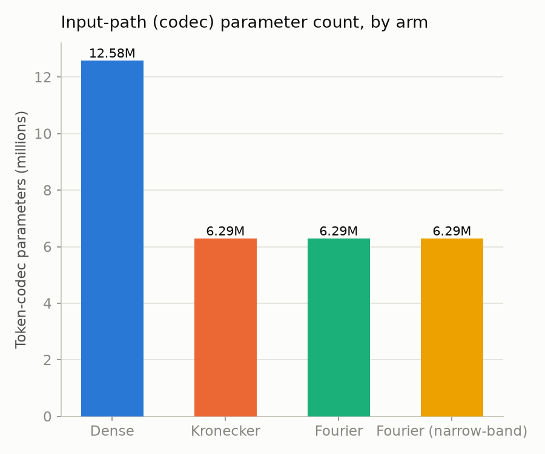
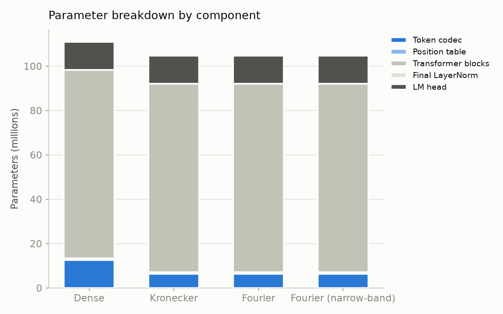
Training dynamics
Training loss shows a clean, expected pattern: Dense trains slightly lower throughout, with the three byte-grid arms tracking each other closely. No arm is unstable or diverges — the codec substitution changes the level loss settles at, not the shape of training.
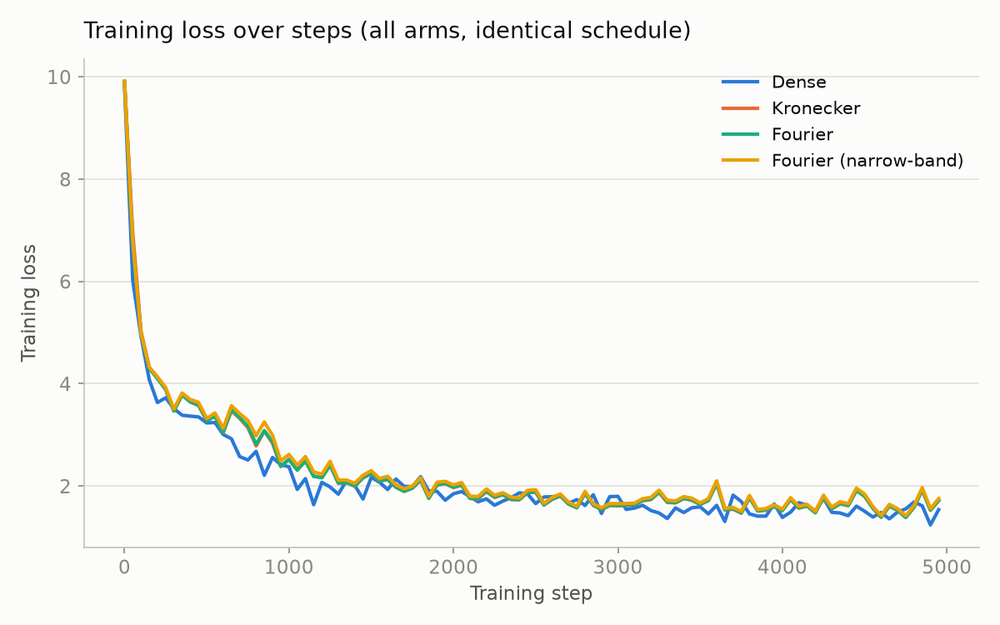
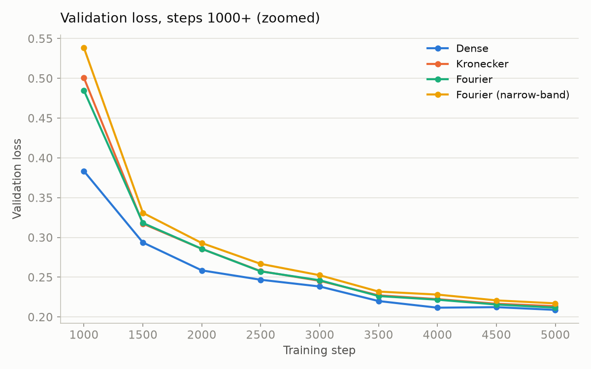
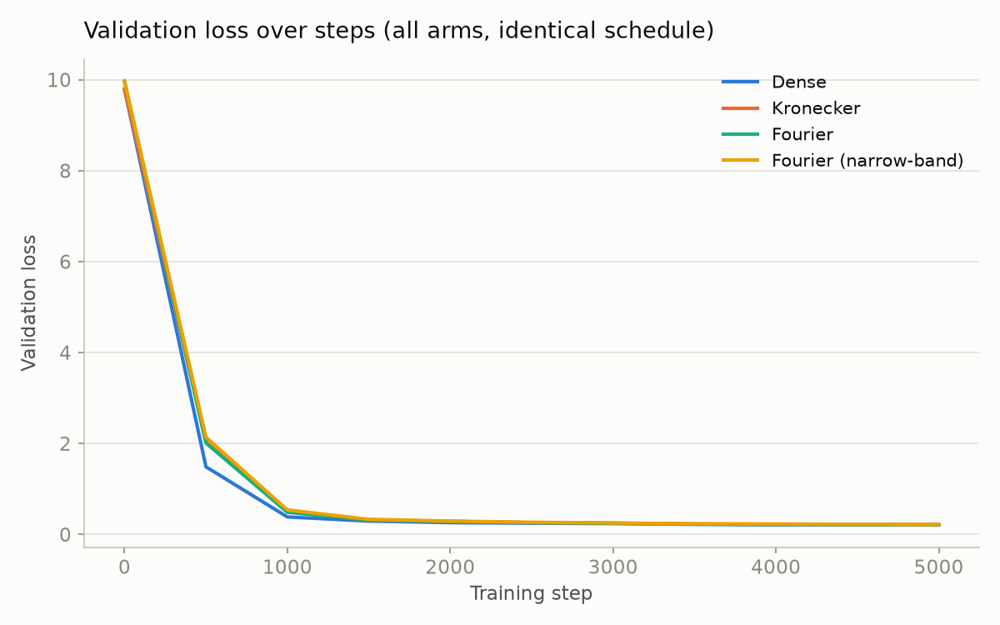
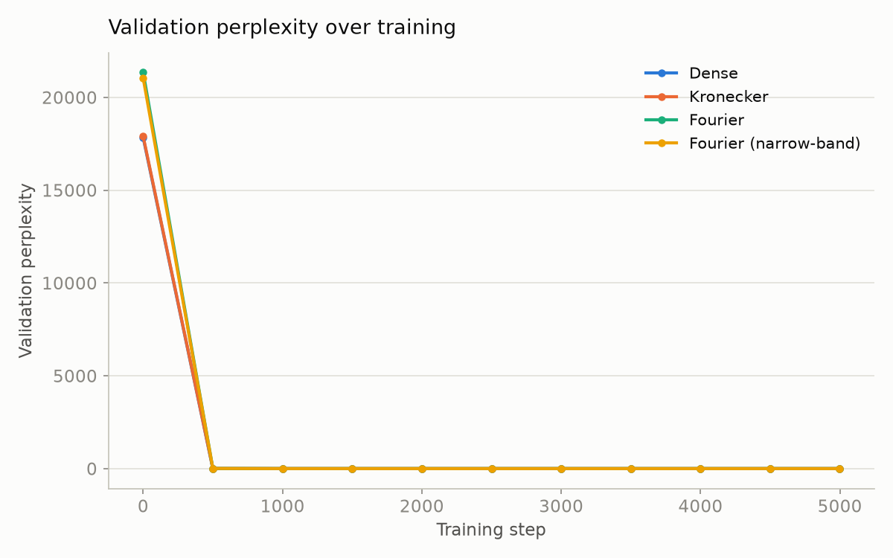
Final performance comparison
| Arm | Final val loss | Best val loss | Final val perplexity | Wall-clock |
|---|
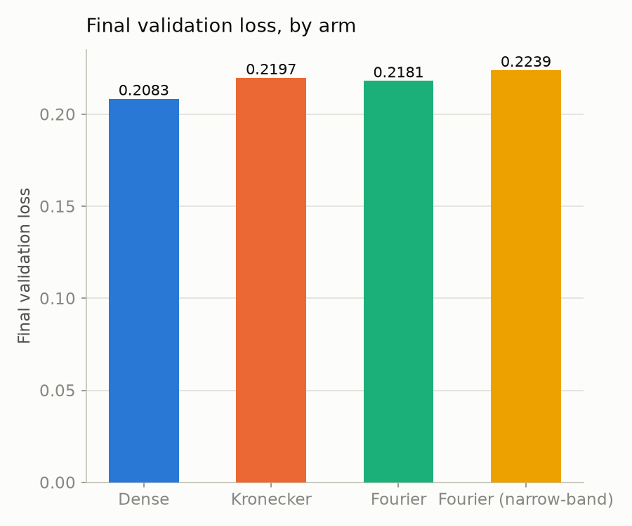
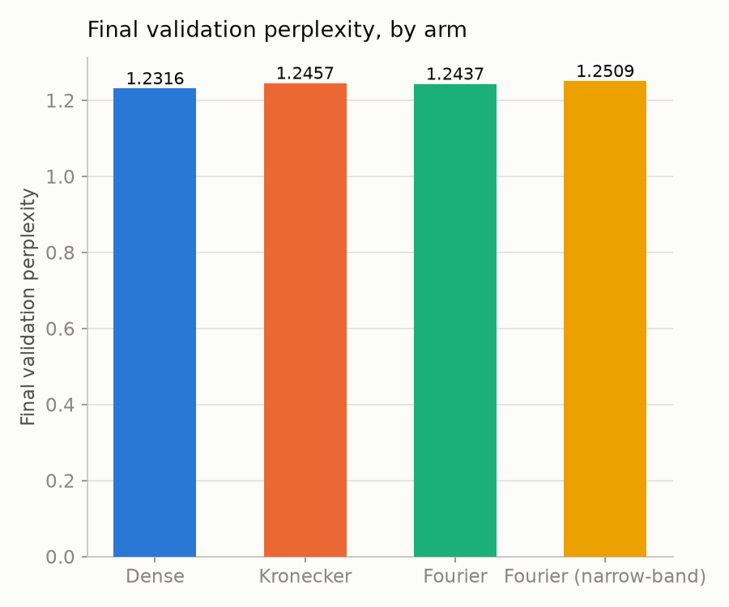
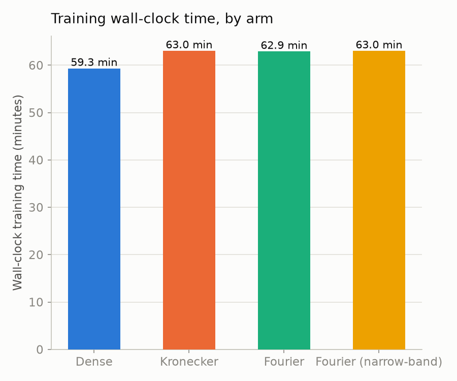
--codec-mode dynamic rebuilds the grid tensor every forward pass. Fewer parameters ≠ faster training under this mode.Deep-Dive Probes
Collision rate, order-sensitivity, and HRR crosstalk — run directly against the real trained vocabulary, not simulated.
Collision analysis — and why this run doesn't test what it looks like it tests
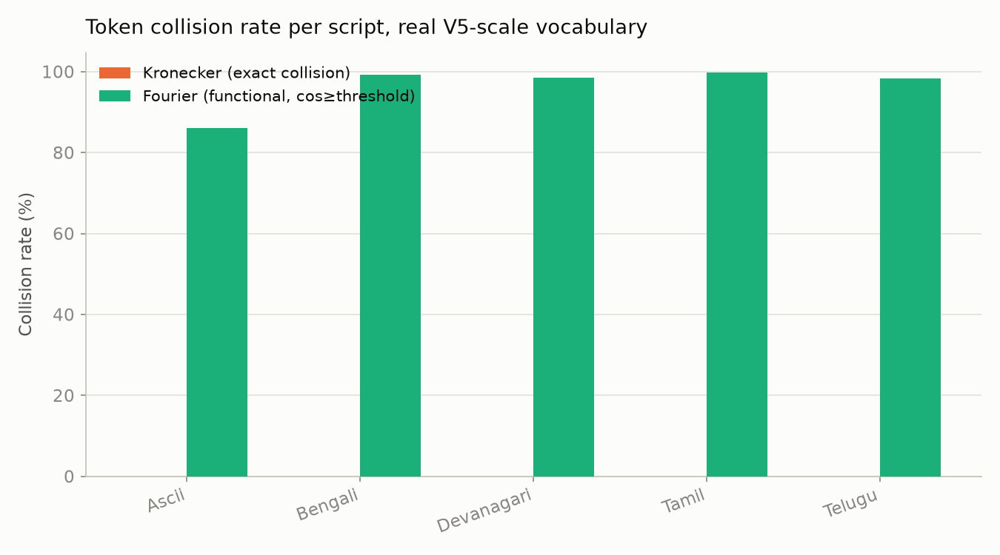
| Script | Kronecker exact collision rate | Fourier functional collision rate (threshold=0.8396) |
|---|
Order-sensitivity probe
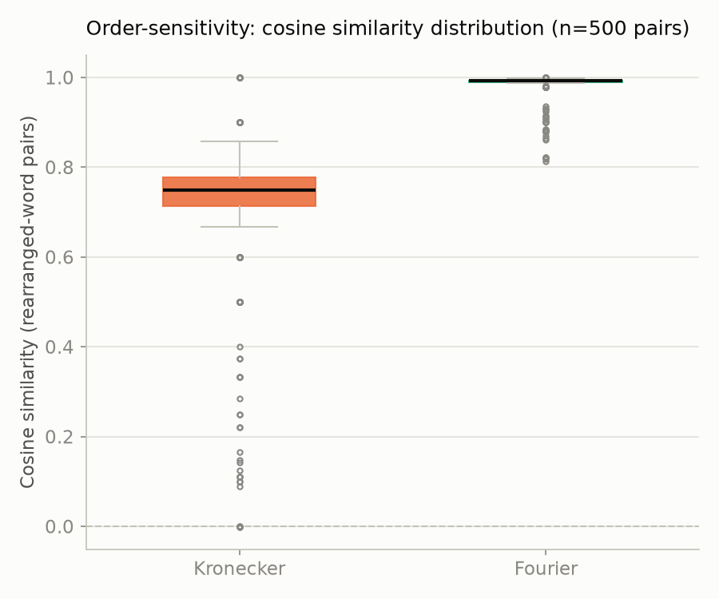
| Metric | Kronecker | Fourier |
|---|
| Pair | Kind | Kronecker | Fourier |
|---|
abcde/bcdea is the direct numeric confirmation of the
derangement corollary: cosine ≈ 0 under Kronecker, 0.911 under Fourier — the §8.2
trade, sharp and unambiguous. compute/commute confirms §7.1
instead: both codecs agree at high similarity (0.857 vs. 0.879) — correct behavior
for a spelling-based codec, not a defect either should fix.
HRR crosstalk probe
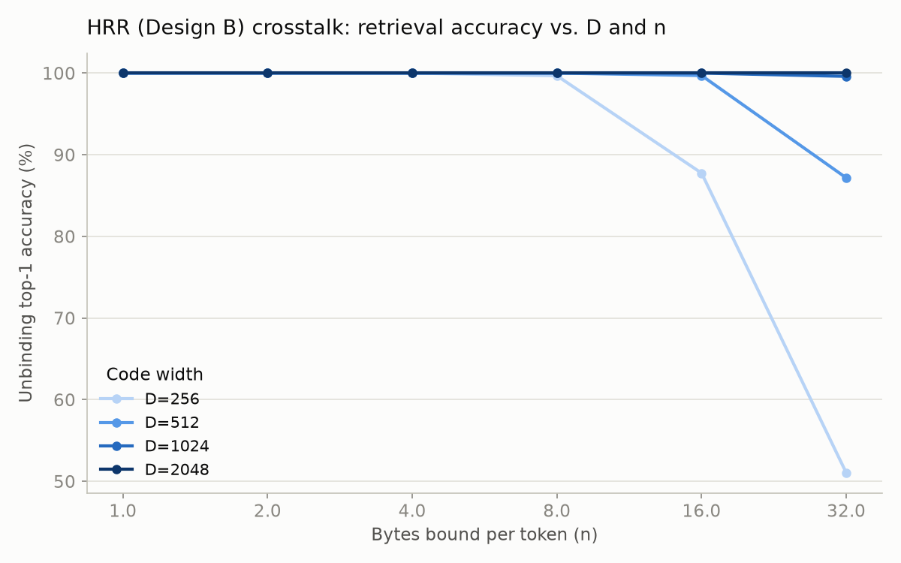
Accuracy stays essentially perfect for a small number of bound bytes at any tested D,
degrades as more bytes are bound, and the degradation point moves out as D
grows — exactly "crosstalk is controllable by increasing D… but it is not
zero." One honest instrumentation caveat: the raw measured_relative_noise
statistic runs several times higher than the O(√(n/D)) prediction at every setting,
because its normalization doesn't account for how the 1/√n binding weight scales the
signal term alongside the noise term. Top-1 accuracy is the metric this page treats
as load-bearing; the raw noise-ratio numbers are not.
Updated Verdict & Conclusion
Every claim from Part I, checked against what the trained run could actually test.
| Research note claim | Status | What this run found |
|---|
Limitations and recommended follow-up
- Single seed, single run per arm — margins are directionally consistent through the whole second half of training, but a 3-seed replication is needed before treating the exact margin as reliable.
- pos_dim=32 with a BPE tokenizer does not test the truncation-wall claim — the central limitation of this run. The most valuable follow-up is a repeat at small pos_dim (e.g. 8–16) and/or longer average tokens.
- Collision-threshold calibration needs to be per-script, not global — before the collision-rate comparison can be trusted in either direction.
- The validation split needs to be a genuine random sample, not a tail slice — a data-pipeline fix, not a codec property.
- Scale is far below the reference paper's — 5,000 steps / ~105–111M params / ~150MB text vs. nanoGPT/GPT-2-124M/FineWeb-Edu scale. A genuine existence proof at this scale, not yet evidence the same margins hold at production scale.
- --codec-mode cached was not tested — would isolate whether the ~6% wall-clock cost is inherent or specific to rebuilding the grid every forward pass.